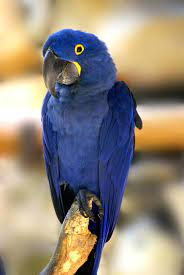

(Anodorhynchus hyacinthinus)

El guacamayo azul o jacinto (Anodorhynchus hyacinthinus) es una especie de ave psitaciforme de la familia de los loros (Psittacidae). Habita en las selvas de buena parte de Brasil, Bolivia y el norte de Paraguay. Es la especie de guacamayo de mayor tamaño. En estado de vulnerabilidad, estas aves son codiciadas por su alto precio en el mercado. En Brasil se conoce como “arara azul”. El guacamayo jacinto tiene un cuerpo recubierto de plumas azules en un tono similar al añil. Su pico es negro con una franja brillante en la unión con la cabeza. También tiene una franja brillante alrededor de sus oscuros ojos. Al contrario que otras especies de guacamayos, carece de una “máscara” sin plumas alrededor de la zona de los ojos.
habitante típico de la selva lluviosa y también de otros tipos de bosques más secos de América del Sur, desde el este de Panamá y la isla de Trinidad hasta Paraguay y el sur de Brasil.
Su alimentación es frugívora y granívora: come grano, semillas, frutos secos y diferentes tipos de fruta fresca.
Es un animal monógamo y la mayoría de parejas permanecen juntas durante muchos años, a menudo toda la vida.
No se considera un ave migratoria, a pesar de que algunas poblaciones pueden emprender movimientos nómadas para buscar alimentos, especialmente en la época húmeda.
Alcanza la madurez sexual a los 4 o 5 años.
REGRESAR AL MENU